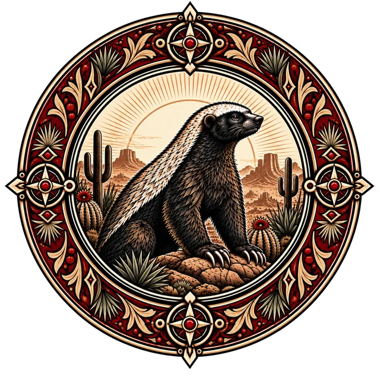

Het Eerste Licht
“Voor de dagen geteld werden, voor hemel, aarde en adem bestonden, was er het Licht. Niet geschapen en niet geboren. Het was.”
Boek van de Eerste Gloed, I

VerathielTheocratie van het Eerste Licht · RepublicMC
Voor ons was het Licht. In ons brandt het Licht. Na ons blijft het Licht.
Het Luminisme
Verathiel is een theocratisch kingdom op RepublicMC, in de wereld Quartum. Wij leven naar het Luminisme, het geloof dat de geleerde Elian in 315 N.A. opnieuw samenstelde uit de verspreide geschriften van het oude Aehisme. De wet van de staat is de wet van het Licht. Aan het hoofd staan de Pontifex en de Heilige Raad.
“Voor de dagen geteld werden, voor hemel, aarde en adem bestonden, was er het Licht. Niet geschapen en niet geboren. Het was.”
Boek van de Eerste Gloed, I
“In de mens brandt het als een vonk. Deze Lichtvonk behoort hem niet toe. Zij is slechts aan hem toevertrouwd zolang hij leeft.”
Boek van de Eerste Gloed, IV
“Er zijn geen twee machten. Steek een lamp aan en de Schaduw wijkt. Daarom strijdt het Licht niet tegen een vijand.”
Kronieken van Elian, II
“De Zon is het Licht van handelen. De Maan is het Licht van inzicht. Daarom dient de wijze beiden te kennen.”
Probeer het zelf
“Door waarheid, barmhartigheid, inzicht en rechtvaardigheid brandt zij helder. Door hoogmoed, bedrog, verraad en wreedheid wordt zij verduisterd. Doch niemand wordt zonder Licht geboren.”
Brengt Licht
Verduistert
Je vonk brandt rustig. Kies hierboven hoe je leeft.
De Acht Geboden
Aelar de Vredesbrenger trok door de landen en schreef na elke ontmoeting één regel op. Wetten noemde hij ze nooit: “Ik heb slechts gezien wat reeds voor ieder zichtbaar was.” Ontsteek een lamp om haar gebod te lezen.
Gebod I · Gelijkwaardigheid
Gij zult het Licht zoeken dat in u woont, en de vonk erkennen die in uw naaste brandt; want uit hetzelfde Eerste Licht zijt gij allen voortgekomen.
Uit De Leer van Aelar
Twee families leven al jaren in twist. Aelar ontsteekt acht lampen uit dezelfde vlam en vraagt: “Ziet gij verschil in het Licht dat zij dragen?”
De Acht Leringen van Aelar
“Dit zijn geen woorden die mij gegeven zijn. Het Licht spreekt niet. Ik heb slechts gezien wat reeds voor ieder zichtbaar was.”
Kroniek
Bijna anderhalve eeuw geschiedenis, van het verbod in Doveport tot het bewind van Pontifex Lars. Scroll naar beneden en volg het Licht.
280 N.A.
Na het openbarsten van de Esfarr raakt raadslid Joachym Blook in paniek. Hij verdenkt Pius en de gelovigen van Doveport van samenzwering, verbiedt het geloof en sluit de deuren van de grote kerk.
282 N.A.
Het geloof leeft ondergronds verder. Terwijl oorlog en rampen het continent teisteren, zoeken steeds meer inwoners in het geheim hoop bij het oude geloof.
293 N.A.
De oorlog van Joachym Blook brengt honger en tekorten. Een grote stroom vluchtelingen trekt naar het rustige Wynnhog en neemt het verboden Aehisme in het geheim mee.
296 N.A.
De gemeenschap in Wynnhog groeit en durft zich te tonen. De nieuwe regent Marius Blook deelt het wantrouwen van zijn vader en beveelt een klopjacht. Wie niet gepakt wordt, vlucht opnieuw of duikt onder.
315 N.A.
De geleerde Elian publiceert zijn Verlichte Verhandelingen. Aelar kwam niet om balans te brengen, maar om het Eerste Licht te schenken. Zijn volgelingen, de Aelarianen, verspreiden het Luminisme snel onder het volk.
360 N.A.
De Aelarianen verenigen de verspreide nederzettingen onder het vaandel van het Luminisme. De wet van de staat wordt de wet van het Licht. Elian wordt de eerste Pontifex en de hiërarchie van Aartsvicarissen wordt vastgelegd.
370 N.A.
Pontifex Elian I overlijdt. Arie volgt hem op.
390 N.A.
Pontifex Arie sterft aan een hartaanval. Cornelis neemt het ambt over.
410 N.A.
Pontifex Cornelis overlijdt een natuurlijke dood. Paulus wordt gekroond.
428 N.A.
Pontifex Paulus overlijdt onder schimmige omstandigheden en Pontifex Lars neemt zijn plaats in. Verathiel is uitgegroeid tot een welvarende, strikte theocratie die met ijzeren hand wordt geregeerd. Het oude Aehisme is een verboden, ketterse herinnering.
De lijn der Pontifexen
De huidige Pontifex · sinds 428 N.A.
Volgde Paulus op na diens dood. Onder zijn leiding is Verathiel een welvarende en strikte theocratie.
Hiërarchie
In Verathiel zijn kerk en staat één. Elke rang draagt een kerkelijke titel. Naast elke titel staat de rang waarmee hij op de server overeenkomt.
Hoogste geestelijke leider en staatshoofd van Verathiel, gekozen door de Heilige Raad.
Draagt het Licht over een bisdom. Ons doel is van heel Quartum één bisdom te maken.
Voert de Wacht van het Licht aan.
Ziet toe op de geestelijke en politieke zuiverheid van het land.
Heer over een abdij en de landen die erbij horen.
“Ik draag het zwaard, maar zal het niet liefhebben.”
“Hij draagt het zwaard opdat anderen het niet hoeven dragen.”
Houdt de Lichthuizen open, waar reizigers voedsel, warmte en kennis vinden.
Geestelijke, gelovige of gewoon burger. Ieder draagt een Lichtvonk.
Uit het Boek der Schaduwen
Tegen zichtbaar kwaad wapent de mens zich. Doch wanneer wreedheid rechtvaardigheid wordt genoemd, wanneer hebzucht plicht wordt genoemd en wanneer hoogmoed heiligheid wordt genoemd, volgen velen zonder te zien waarheen zij geleid worden.
Zie wat de daden van een mens achterlaten. Want de vrucht verraadt de boom.
beweeg je lantaarn over de tekst
De Stad
Tussen de duinen en cactussen van Quartum verrijst Verathiel: zandstenen muren, rode daken, zuilengangen en klokkentorens. Dit is pas het begin. Het plan is een grote stad in Romeinse stijl, met basilieken waar het Licht gevierd wordt.
De Verlichte Verhalen
Acht boeken over het Eerste Licht, de reizen van Aelar, de leer van Elian en het einde van alle dingen. Kies een boek van de plank en lees.
Boek I
Over het begin van alle dingen, de Lichtvonk en de Eerste Belofte.
Hoofdstuk I
Voor de dagen geteld werden, voor hemel, aarde en adem bestonden, was er het Licht. Niet geschapen en niet geboren. Het was.
Aansluiten
Verathiel zoekt gelovigen, bouwers, wachters en verhalenvertellers. Dit is waar wij voor staan.
Wij spelen het liefst met stem. Het grootste deel van onze leden kiest voice RP boven tekst.
We blijven buiten de politieke conflicten van Quartum, tenzij die ingaan tegen de geboden van het Licht.
Ons doel is in elk rijk een kerk of basiliek te stichten en het Licht over het hele continent te dragen.
Shorts en roleplayvideo's, van live RP tot opgenomen misvieringen.
Stel je voor, lees de regels en maak kennis met de gemeenschap.
Wie is jouw gelovige? Monnik, Geloofswachter of gewone burger: iedereen draagt een Lichtvonk.
Bouw mee aan de stad, woon een misviering bij en speel mee in voice RP.
Hier komt Verathiel samen: aankondigingen, roleplay, taken voor de stad en alles wat er in het kingdom gebeurt.
discord.gg/6MVmUydGcq
Shorts en roleplayvideo's uit Verathiel, op ons kanaal @VerathielRMC.